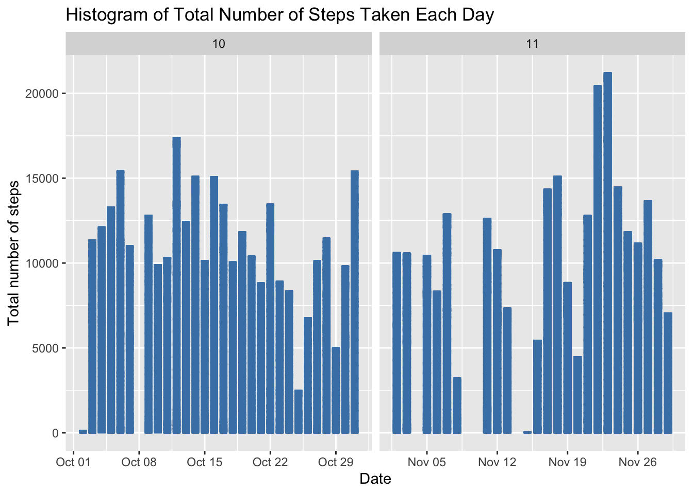
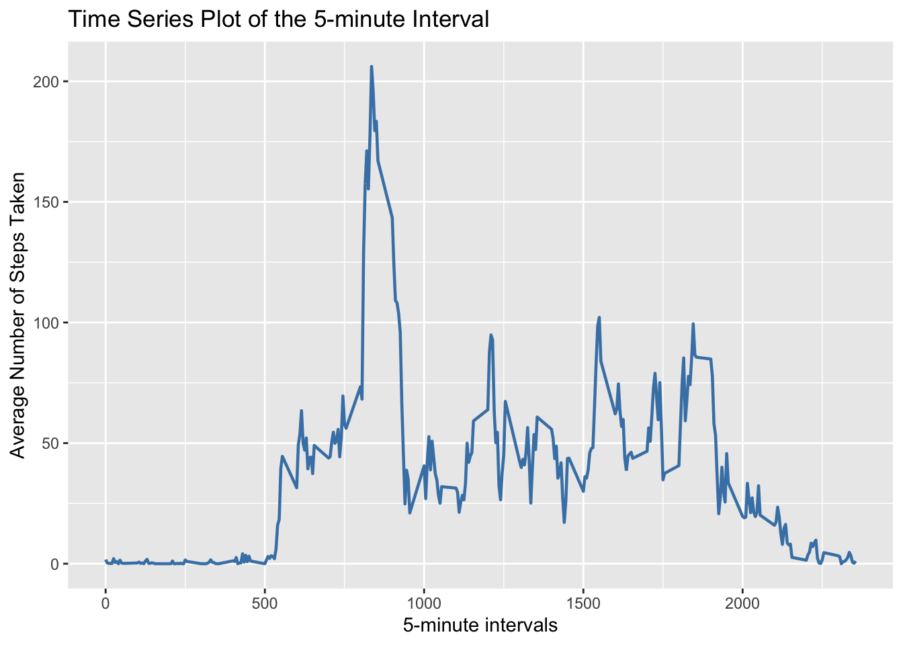
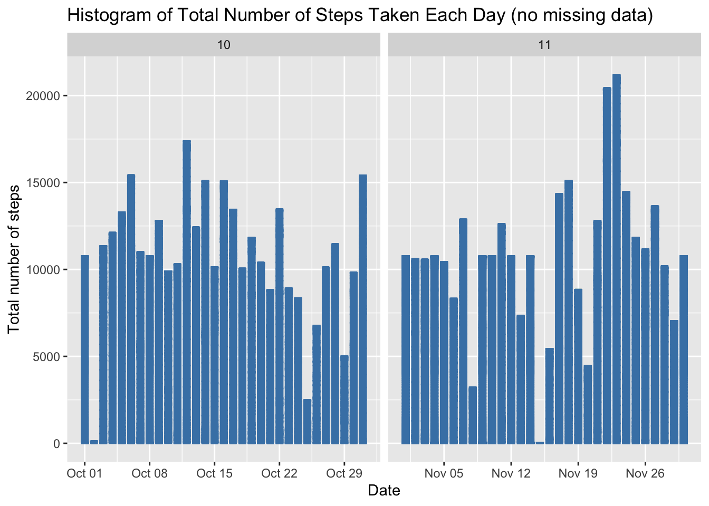
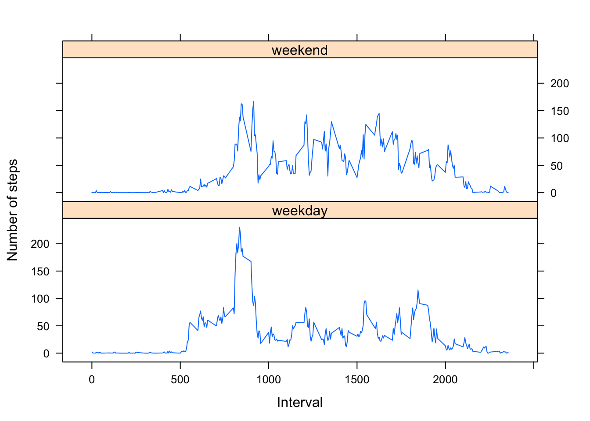

echo = TRUE # Always make code visible
options(scipen = 1) # Turn off scientific notations for numbers
library(ggplot2)
library(knitr)data <- read.csv("activity.csv", colClasses = c("integer", "Date", "factor"))
data$month <- as.numeric(format(data$date, "%m"))
noNA <- na.omit(data)
rownames(noNA) <- 1:nrow(noNA)
head(noNA)## steps date interval month
## 1 0 2012-10-02 0 10
## 2 0 2012-10-02 5 10
## 3 0 2012-10-02 10 10
## 4 0 2012-10-02 15 10
## 5 0 2012-10-02 20 10
## 6 0 2012-10-02 25 10dim(noNA)## [1] 15264 4Histogram of the total number of steps taken each day 
To calculate the mean and median total number of steps per day
Mean total number of steps taken per day:
totalSteps <- aggregate(noNA$steps, list(Date = noNA$date), FUN = "sum")$x
mean(totalSteps)## [1] 10766.19Median total number of steps taken per day:
median(totalSteps)## [1] 10765avgSteps <- aggregate(noNA$steps, list(interval = as.numeric(as.character(noNA$interval))), FUN = "mean")
names(avgSteps)[2] <- "meanOfSteps"
ggplot(avgSteps, aes(interval, meanOfSteps)) +
geom_line(color = "steelblue", size = 0.8) +
labs(title = "Time Series Plot of the 5-minute Interval", x = "5-minute intervals", y = "Average Number of Steps Taken") * The following 5-minute interval contains the maximum number of steps:
avgSteps[avgSteps$meanOfSteps == max(avgSteps$meanOfSteps), ]## interval meanOfSteps
## 104 835 206.1698sum(is.na(data))## [1] 2304newData <- data
for (i in 1:nrow(newData)) {
if (is.na(newData$steps[i])) {
newData$steps[i] <- avgSteps[which(newData$interval[i] == avgSteps$interval), ]$meanOfSteps
}
}
head(newData)## steps date interval month
## 1 1.7169811 2012-10-01 0 10
## 2 0.3396226 2012-10-01 5 10
## 3 0.1320755 2012-10-01 10 10
## 4 0.1509434 2012-10-01 15 10
## 5 0.0754717 2012-10-01 20 10
## 6 2.0943396 2012-10-01 25 10sum(is.na(newData))## [1] 0ggplot(newData, aes(date, steps)) + geom_bar(stat = "identity",
colour = "steelblue",
fill = "steelblue",
width = 0.7) + facet_grid(. ~ month, scales = "free") + labs(title = "Histogram of Total Number of Steps Taken Each Day (no missing data)", x = "Date", y = "Total number of steps")
Mean total number of steps taken per day:
newTotalSteps <- aggregate(newData$steps,
list(Date = newData$date),
FUN = "sum")$x
newMean <- mean(newTotalSteps)
newMean## [1] 10766.19Median total number of steps taken per day:
newMedian <- median(newTotalSteps)
newMedian## [1] 10766.19Compare them with the two before imputing missing data:
oldMean <- mean(totalSteps)
oldMedian <- median(totalSteps)
newMean - oldMean## [1] 0newMedian - oldMedian## [1] 1.188679So, after imputing the missing data, the new mean of total steps taken per day is the same as that of the old mean; the new median of total steps taken per day is greater than that of the old median.
head(newData)## steps date interval month
## 1 1.7169811 2012-10-01 0 10
## 2 0.3396226 2012-10-01 5 10
## 3 0.1320755 2012-10-01 10 10
## 4 0.1509434 2012-10-01 15 10
## 5 0.0754717 2012-10-01 20 10
## 6 2.0943396 2012-10-01 25 10newData$weekdays <- factor(format(newData$date, "%A"))
levels(newData$weekdays)## [1] "Friday" "Monday" "Saturday" "Sunday" "Thursday" "Tuesday"
## [7] "Wednesday"levels(newData$weekdays) <- list(weekday = c("Monday", "Tuesday",
"Wednesday",
"Thursday", "Friday"),
weekend = c("Saturday", "Sunday"))
levels(newData$weekdays)## [1] "weekday" "weekend"table(newData$weekdays)##
## weekday weekend
## 12960 4608avgSteps <- aggregate(newData$steps,
list(interval = as.numeric(as.character(newData$interval)),
weekdays = newData$weekdays),
FUN = "mean")
names(avgSteps)[3] <- "meanOfSteps"
library(lattice)
xyplot(avgSteps$meanOfSteps ~ avgSteps$interval | avgSteps$weekdays,
layout = c(1, 2), type = "l",
xlab = "Interval", ylab = "Number of steps")